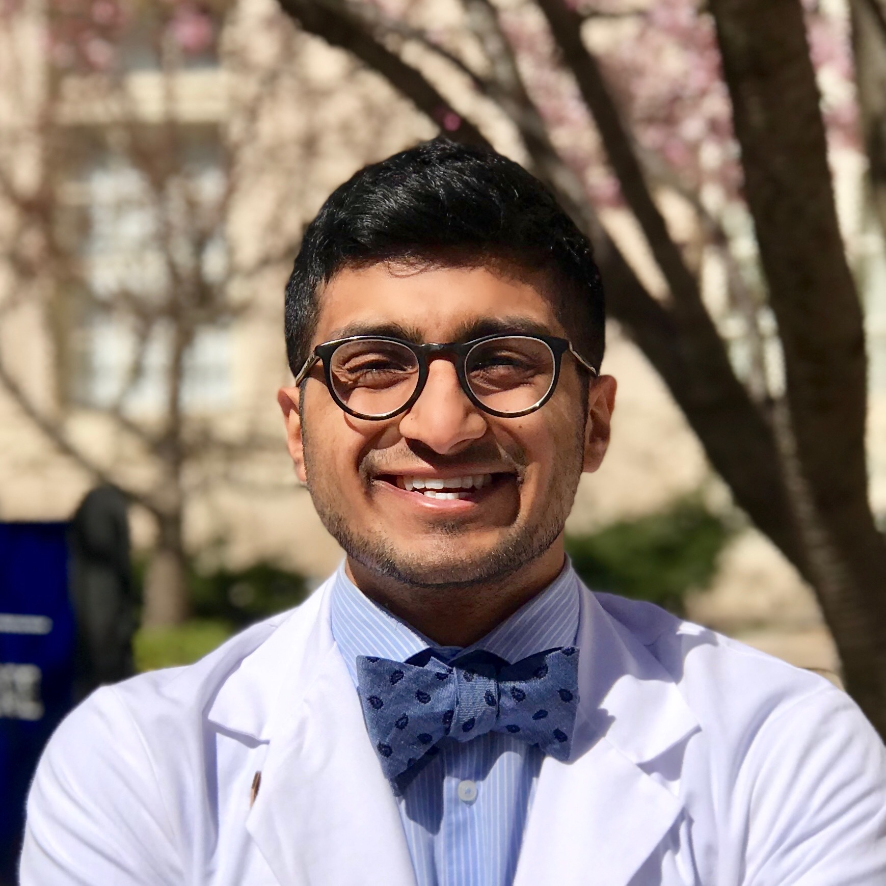

People
Principal Investigator

Sheng Chih (Peter) Jin
Peter is Assistant Professor of Genetics and Pediatrics at the Washington University School of Medicine. He is interested in understanding how genetic variation affects disease biology and using genetic and genomic analyses to infer the molecular mechanisms underlying neurodevelopmental and cardiovascular diseases. His full CV is available here.
NIH Grants
- R00HL143036: Integrative Genomic Analysis of Congenital Heart Disease (Role: PI) (Active)
- R01NS111029: Human Genetics and Molecular Mechanisms of Congenital Hydrocephalus (Role: Co-Investigator) (Active)
- R01AR067715: Genetic Risk Factors for Severe Scoliosis (Role: Co-Investigator) (Active)
- R01NS117609: Human Genetics and Molecular Mechanisms of Vein of Galen Aneurysmal Malformation (Role: Co-Investigator) (Active)
Selected Honors and Awards
- K99/R00 Pathway to Independence Award, NHLBI, NIH
- American Heart Association Postdoctoral Fellowship
- James Hudson Brown – Alexander B. Coxe Fellowship, Yale School of Medicine
- Howard Hughes Medical Institute Postdoctoral Fellowship, Howard Hughes Medical Institute at Yale School of Medicine
- Fellow, Lucille P. Markey Special Emphasis Pathway in Human Pathobiology, Markey Foundation, Washington University School of Medicine
Postdoctoral Researchers and Fellows
This could be you
Graduate Students

Shujuan Zhao, Ph.D. Candidate (Chemistry), Washington University in St. Louis
Shujuan is a 2nd year Ph.D. student at Washington University in St. Louis with a background in biochemistry and nuclear magnetic resonance. She is working with Dr. Jin and Dr. Kahle at Yale to figure out the genetic etiology and molecular mechanisms of Vein of Galen aneurysmal malformation and Moyamoya disease.

Amar Sheth, MD Student, Yale School of Medicine
Amar is a 2nd year medical student at Yale with a background in developmental neuroscience and computer science. His broader research aim is to harness our current understanding of spatiotemporal genetics of the brain to discover mechanisms of neurological dysfunction.

Duy Phan, MD/Ph.D. Student, Yale School of Medicine
Duy graduated with a B.S. in Neuroscience in 2018 from Johns Hopkins University, where he was a Barry M. Goldwater Scholar, Woodrow Wilson Research Fellow, HHMI Scholar, and NIH Research Fellow. He is interested in the molecular genetic mechanisms of neural development and the pathogenesis of primary and acquired central nervous system maldevelopment.

Weilai Dong, Ph.D. Candidate, Yale School of Medicine
Weilai graduate with a B.S. in Biology in 2015 from the Zhejiang University. She was awarded a prestigious pre-doctoral fellowship from the American Heart Association. She is interested in using genomics and human genetics to identify causes of congenital disorders and cancer.
Spencer King, M.Sc. Student (Computer Science), Washington University in St. Louis
Spencer graduated with a B.S. in Computer Science and Engineering from the University of Notre Dame in 2016. He has held multiple jobs in healthcare and is interested in the application of machine learning techniques to the medical field.
Sam Peters, M.Sc. Student (Bioinformatics and Computational Biology), Saint Louis University
Sam graduated with a B.S. in Biology from the Southern Illinois University Edwardsville. He is interested in implementing efficient bioinformatic pipelines, increasing efficiencies of ones already in place, and visualizing large datasets in a high-throughput manner by creating efficient code. He has a passion for homebrewing and baking bread.
Staff

Po-Ying Fu, Bioinformatics Research Analyst, Washington University in St. Louis
Po-Ying obtained her master’s degree in microbiology specialized in bioinformatics from Soochow University. In her master’s thesis, she performed genomics analysis and used cell biology approaches to reveal the anti-cancer ability of lipopolysaccharide binding peptides. To advance her programming skills, she completed several advanced computer science courses at 42 Silicon Valley (a software engineering school) and Ohlong College. She loves cycling and traveling!
Rotation Students and Interns
Jian Ryou, Ph.D. Student (Human & Statistical Genetics), Washington University School of Medicne